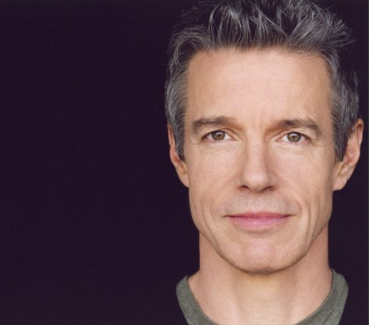

#10167 Real Love
Alternativ: Untamed Heart (Englischer Titel)


 IMDB-Wertung: 6.8 / 10
IMDB-Wertung: 6.8 / 10  Metascore: 0
Metascore: 0 
Seit Shakespeares ‘Romeo und Julia’ wissen wir: Die schönsten Romanzen sind immer noch die ohne Happy End. Ein solch romantisches, traurig-schönes Liebesmelodram schuf auch Regisseur Tony Bill 1983 mit ‘Real Love’. I. Der Küchengehilfe Adam ist zunächst viel zu schüchtern, um die Frau seiner Träume, die lebenslustige Kellnerin Caroline anzusprechen. Nachdem er ihr aber in einer gefährlichen Situation tapfer beigestanden hat, entbrennt zwischen den beiden doch noch die wahre Liebe. Was Caroline nicht weiß: Adam leidet an einer unheilbaren Krankheit.
Jahr: 1993
Dauer: 97 Minuten
FSK: 12
Land: USA Studio: MGMTonspuren: DD5.1 - ,
Untertitel:
Auflösung: 1080p (1920x1080) Größe: 5304 MB
Genre: Drama, Komödie, Liebe
Regisseur: Tony Bill
Drehbuch: Tom Sierchio
Soundtrack: Cliff Eidelman
Darsteller:
 Christian Slater als Adam
Christian Slater als Adam Marisa Tomei als Caroline
Marisa Tomei als Caroline Rosie Perez als Cindy
Rosie Perez als Cindy-  Kyle Secor als Howard
 Willie Garson als Patsy
Willie Garson als Patsy- Gary Groomes als Bill #2
- Claudia Wilkens als Mother Camilla
 Vincent Kartheiser als Orphan Boy
Vincent Kartheiser als Orphan Boy John Beasley als Cook
John Beasley als Cook- Tom Sierchio als Ronnie
- Allen Hamilton als Doctor
- John Paul Gamoke als Priest
- Robert Malone als Stand in (uncredited)
- James Cada als Bill #1
- Pat Clemons als Sister Helen
- Lotis Key als Nun
- Vanessa Hart als Nun
- Charley Bartlett als Young Adam
- Wendy Feder als Orphange Nurse
- Nancy Marvy als Caroline's Mom
- Paul Douglas Law als Steven
- Joshua Schaefer als Michael
- Marquetta Senters als Mary
- Joe Minjares als Jim
- Joe Schmit als Sportscaster
- Steve Cochran als Stromboli
- Sally Wingert als Tree Customer
- Richard Grusin als Caroline's Father
- Buffy Sedlachek als Lottie
- Aaron Kjenaas als Nick
- Isabell O'Connor als Police Officer
- Kay Bonner Nee als Beauty Shop Customer
- Lia Rivamonte als Beauty School Instructor
- Greg Sain als Kevin
- Margaret McGraw als Girl in Car
- Joel Edwards als Priest (uncredited)
- David Fleming als Man in Police Lineup (uncredited)
Datei: X:\1993\Real Love (1993, FSK12, 1920x1080).mkv seit 13.12.2018
Festplatte: HD 1992-1995
 Es gibt insgesamt 68 Filme in der Gruppe '1993'
Es gibt insgesamt 68 Filme in der Gruppe '1993'